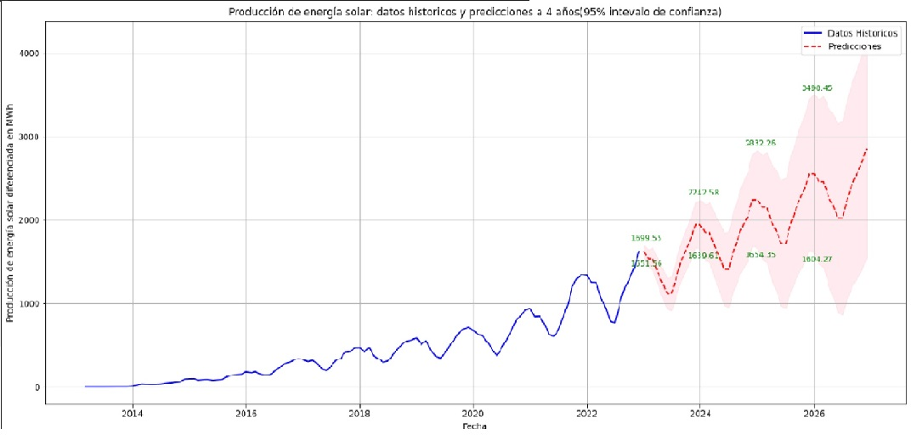
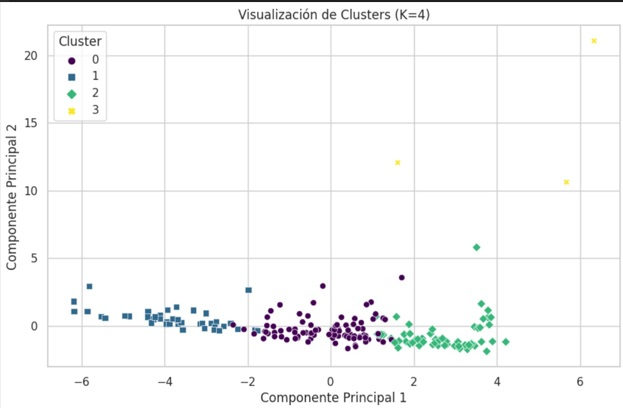

Proyectos Destacados
Análisis de Calidad de Energía Eléctrica para Equipos Industriales
Estudio técnico realizado para diagnosticar la red eléctrica de una planta industrial mediante el equipo Fluke 435 II. Se analizaron parámetros críticos como distorsión armónica (THD), corriente de neutro, sobrecorrientes, factor de potencia y potencia de armónicos. El proyecto permitió identificar riesgos asociados a equipos electrónicos sensibles (PLCs, VFDs, UPS), principalmente por armónicos elevados (>3000 VA) y factor de potencia bajo (0.7).
Estudio de la Influencia de la Calidad de Energía en Fallas de UPS y Equipos electrónicos
Estudio técnico orientado a diagnosticar y corregir fallas en equipos críticos, producto de una red eléctrica deficiente. Se realizó un análisis exhaustivo de distorsión armónica, factor de potencia y corrientes de neutro mediante mediciones con Fluke 435 II y procesamiento de datos con Python. El proyecto identificó eventos críticos como armónicos elevados y bajo factor de potencia, proponiendo soluciones para mejorar la confiabilidad de UPS y demás equipos electrónicos.
Análisis de Integridad y Cruce de Datos mediante Consultas SQL en PostgreSQL
Proyecto orientado a validar la consistencia de registros de RUT provenientes de diferentes fuentes mediante consultas SQL en PostgreSQL. Se realizaron procesos de limpieza, normalización y cruce de datos utilizando operadores como JOIN, INTERSECT y EXCEPT. Se generaron vistas para detectar registros comunes, exclusivos y consolidar los datos únicos entre ambas fuentes. El trabajo final incluyó la entrega de reportes en Excel para uso administrativo y auditorías.
Ver Consulta SQL (.sql)Predicción de Energía Solar en Chile
Estudio de series temporales usando SARIMA para proyectar la producción de energía solar en Chile durante los próximos 4 años.
 Ver proyecto en GitHubClustering de Indicadores Globales
Análisis con PCA y K-Means para identificar agrupaciones de países según PIB, CO₂, educación y participación laboral.
 Ver Proyecto en GitHubSegmentación de Clientes por Clustering
Segmentación de clientes basada en clustering para identificar patrones relevantes mediante K-Means y PCA.
 Ver Proyecto en GitHub
Ver Proyecto en GitHub